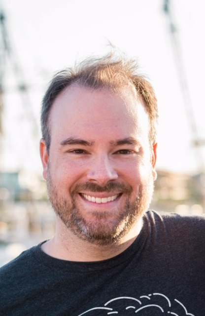

about me
I am a developer and musician based in Apex, North Caorlina. I approach all of my work with an emphasis towards precision and craftsmanship. I draw inspiration from the simple, uncomplicated things in life. I strive to create user experiences that are time-tested and true.
Having been a musician for most of my life, I am drawn to all types of creative work. As a musician, I was always looking for that which could be improved--that which could be better. I relish the process and stick to it. I realize that true acts of creation are like living, breathing things, and are always evolving, and it is important to constantly approach projects, as well as life, from new perspectives.
I live with my wife, a communications specialist and opera singer, and our two cats, Basil and Rosemary. I enjoy weightlifting and golf, and spend my free time contemplating/quantifying PGA Tour strokes gained statistics. I am also an aspiring food scientist--I enjoy cooking and grilling as well as the science (and art) of beer. I have sung in choirs and vocal groups my entire life, and I know more song lyrics than any one human being should.
connect